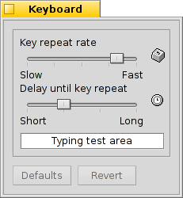

| Indeks |
|
Klawiatura Mysz Gładzik |
 Urządzenia wejściowe
Urządzenia wejściowe
| Deskbar: | ||
| Ścieżka: | /boot/system/preferences/Input | |
| Ustawienia: | ~/config/settings/Keyboard_settings ~/config/settings/Mouse_settings ~/config/settings/Touchpad_settings |
Panel preferencji Urządzeń wejściowych łączy funkcje poprzednio oddzielnych paneli dla klawiatury, myszy, gładzika oraz pozostałych metod wejścia rozpoznanych przez system. Urządzenia są wypisane po lewej, prawa strona zaś zmienia się w zależności od dostępnych ustawień dla wybranego urządzenia.
 Klawiatura
Klawiatura

Ustawia częstotliwość oraz opóźnienie przed rozpoczęciem powtarzania wciśniętego klawisza. W polu na dole możesz przetestować zmiany.
| ustawia domyślne wartości dla każdego z pól. | ||
| przywraca ustawienia aktywne w momencie uruchomienia panelu preferencji. |
Mysz

Najpierw ustawia się typ myszy: jedno-, dwu- lub trójprzyciskowa. Można zasymulować prawoklik trzymając klawisz CTRL podczas kliknięcia lewym przyciskiem, natomiast dla efektu kliknięcia środkowym przyciskiem należy przytrzymać CTRL ALT.
Istnieje możliwość zmiany znaczenia przycisków, poprzez kliknięcie jednego z nich i wybór nowego działania z rozwijanego menu.
Suwakami po prawej dostosowuje się szybkość podwójnego kliknięcia, szybkość wskaźnika i wspomaganie. Obszar testowy poniżej odzwierciedlenia myszy służy sprawdzeniu, czy szybkość dwukrotnego kliknięcia jest odpowiednia: jeżeli dwuklik na słowie nie zaznaczy go, szybkość jest za duża (albo trzeba będzie przywyknąć do szybszego klikania...).
Są trzy które zmieniają sposób reagowania okien na kliknięcia:
| Ustawienie domyślne: kliknięcie na oknie aktywuje je i przesuwa na wierzch. | ||
| Kliknięcie na oknie jedynie je aktywuje, nie zostanie ono przesunięte na wierzch. Aby to zrobić należy kliknąć albo pasek tytułu lub obramowanie, albo gdziekolwiek przytrzymując klawisze zarządzania oknami CTRL ALT. | ||
| Okno aktualnie znajdujące się pod kursorem zostaje aktywowane. Przesuwanie na wierzch odbywa się w ten sam sposób, co w trybie wyżej. |
Włączenie opcji umożliwia interakcję z oknem (klikanie przycisków, rozwijanie menu, itd.) bez jego wcześniejszego aktywowania. Podnosi to ryzyko przypadkowego zamknięcia okna, np. poprzez kliknięcie przycisku zamykania zamiast paska tytułu. Z drugiej strony znacząco przyspiesza pracę.
Wszystkie ustawienia są zapisywane automatycznie.
| ustawia domyślne wartości dla każdego z pól. | ||
| przywraca ustawienia aktywne w momencie uruchomienia panelu preferencji. |
Gładzik

Przeciągając czerwone pionowe i poziome linie na reprezentacji gładzika, ustawiasz obszar przewijania (lekko czerwony na szarym tle ogólnego obszaru). Poruszanie palcem w tej części gładzika będzie odpowiednio przesuwać paski przewijania.
Suwaki po prawej ustawiają przyspieszenie przewijania oraz pionową i poziomą szybkość przewijania.
Przyspieszenie określa jak szybko przewijana będzie lista przy szybkim przesunięciu palcem po obszarze przewijania. Szybkości przewijania kontrolują ogólną szybkość przewijania przy „normalnym” użytkowaniu obszaru przewijania.
Pod grafiką gładzika znajdują się pola wyboru uaktywniające „Przewijanie dwoma palcami” w poziomie i w pionie. Poruszenie dwoma palcami naraz spowoduje przesunięcie pasków przewijania.
Jeżeli używanie tej funkcjonalności jest komfortowe, można pozbyć się obszaru przewijania i używać całego gładzika do poruszania wskaźnikiem myszy.
Na dole jest kolejny suwak ustawiający czułość wykrywania stuknięć. Jeśli twoje stuknięcia są ignorowane, zwiększ czułość. Jeśli natomiast system cały czas rejestruje kliknięcia, podczas zwykłego przesuwania wskaźnika myszy, spróbuj ją zmniejszyć.
| ustawia domyślne wartości dla każdego z pól. | ||
| przywraca ustawienia aktywne w momencie uruchomienia panelu preferencji. |
Parę porad nie związanych bezpośrednio z ustawieniami gładzika, ale pasujących do tematu:
Czy wiesz że możesz przeciągać i upuszczać elementy używając wyłącznie gładzika, bez przycisków? Dwukrotne kliknięcie bez podnoszenia palca po drugim kliknięciu przyklei podnoszony element do wskaźnika myszy, pozwalając go przeciągać poruszaniem palca. Podniesienie palca upuści go.
A co jeżeli palec dotrze do krańca gładzika podczas przeciągania elementu, ale wskaźnik nie dotarł jeszcze do krawędzi ekranu? Jak kontynuować przeciąganie? W momencie podniesienia palca element zostanie upuszczony!
W zależności od sprzętu, może być dostępna przydatna funkcjonalność: zatrzymanie palca na krańcu gładzika kontynuuje przesuwanie wskaźnika myszy na autopilocie.